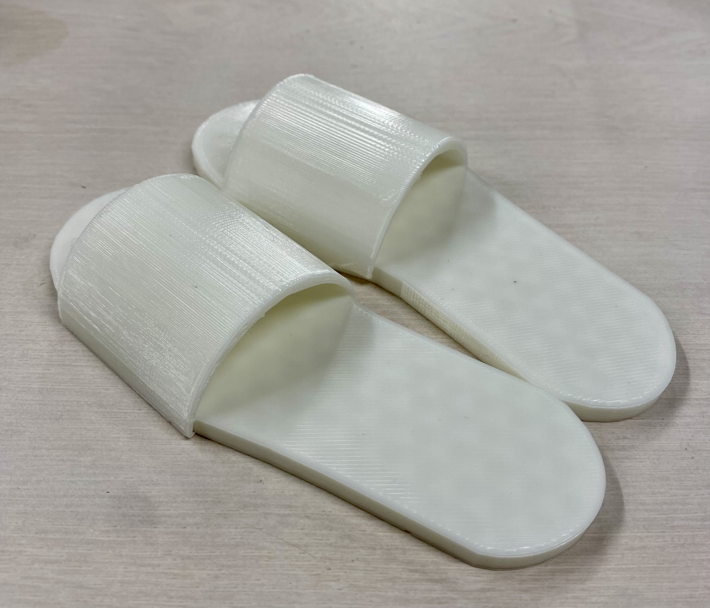

最終課題
スリッパ

YouTube
リンク
設計ファイル
stlファイル
作品の説明
今回は3Dプリンターを使ってスリッパをつくりました。
これを作ろうと思ったきっかけは最初は靴を作ろうと思ったのですが制作時間と難易度が、
高すぎるのでやめてスリッパを作ることにしました。作品を作るにあたって、本物の足のサイズに
しようと思ったのですがサイズが収まりきらなかったので断念しました。
制作プロセスの中で調べたこと
スリッパの形
フュージョンの動画
反省点
細かい部分の設計がうまくいかなかった